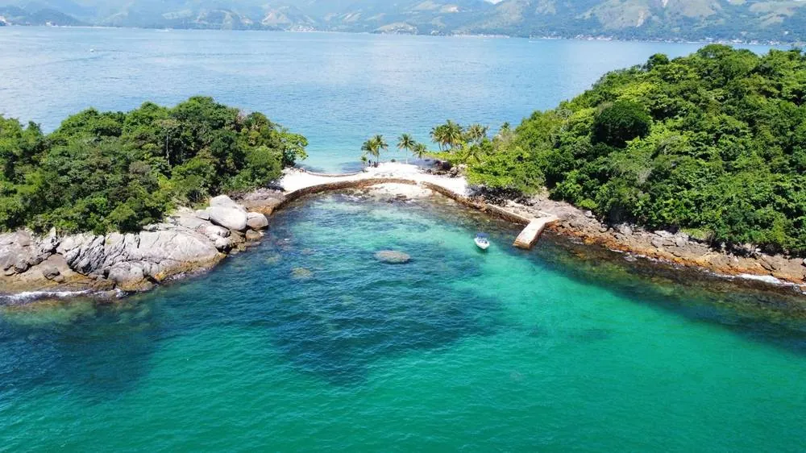
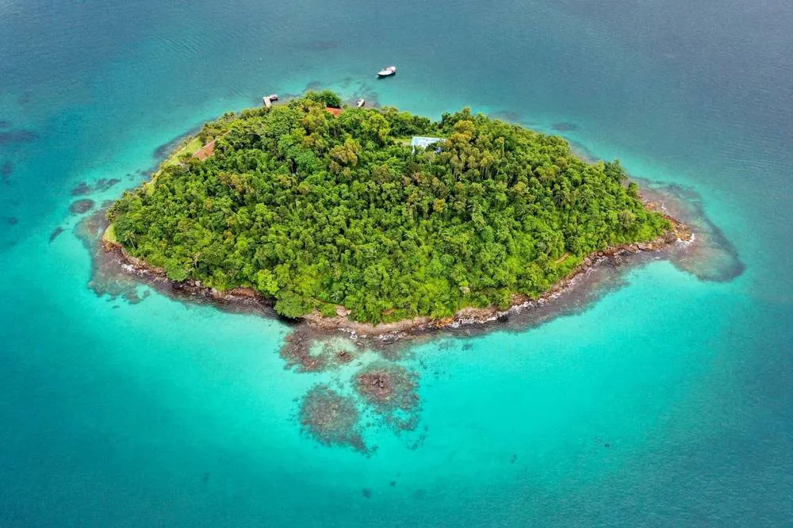
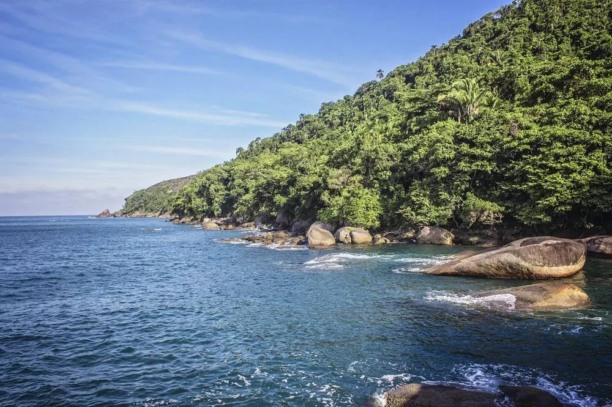
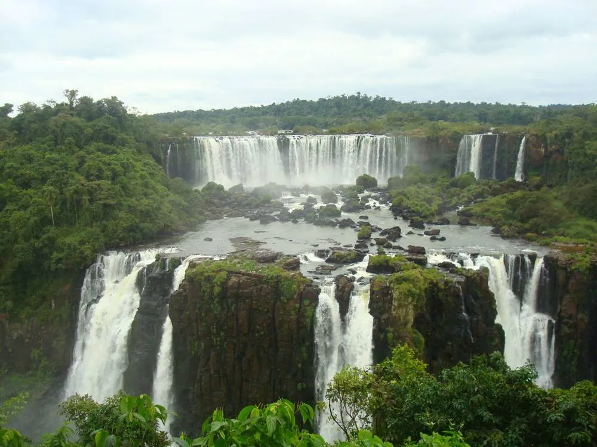
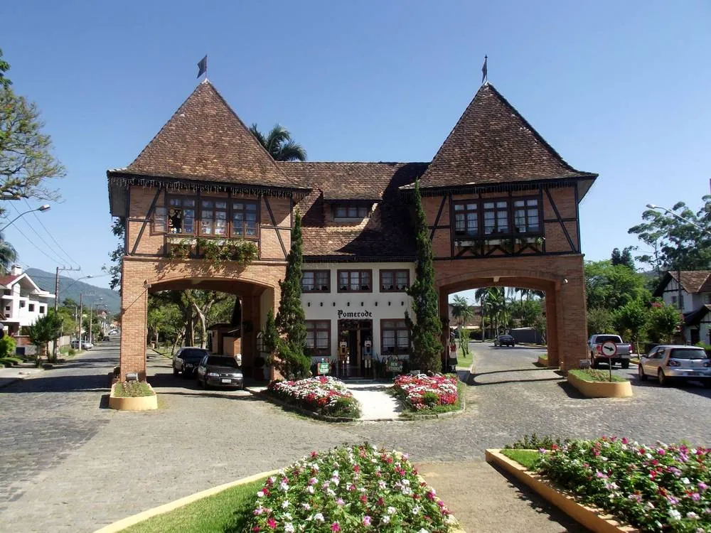
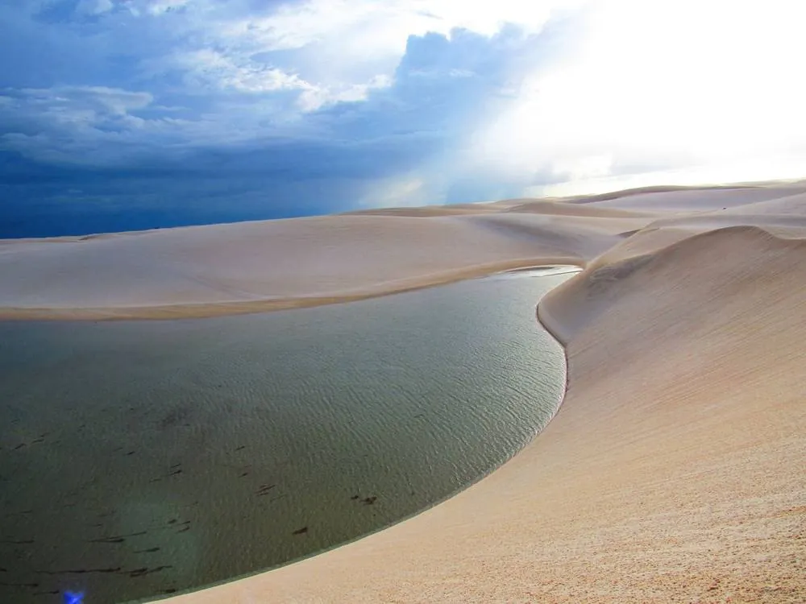
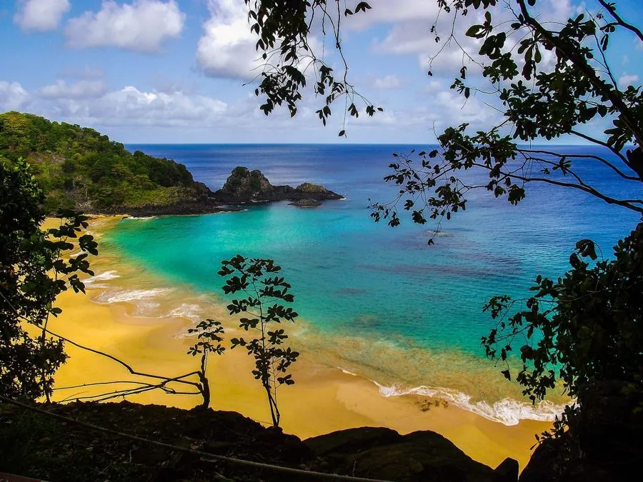
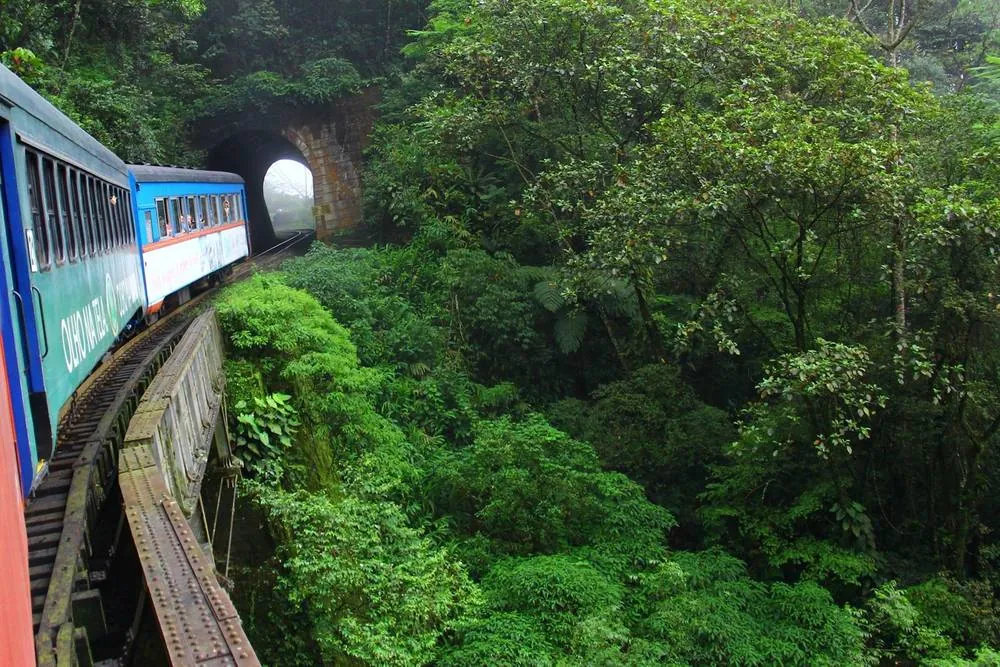
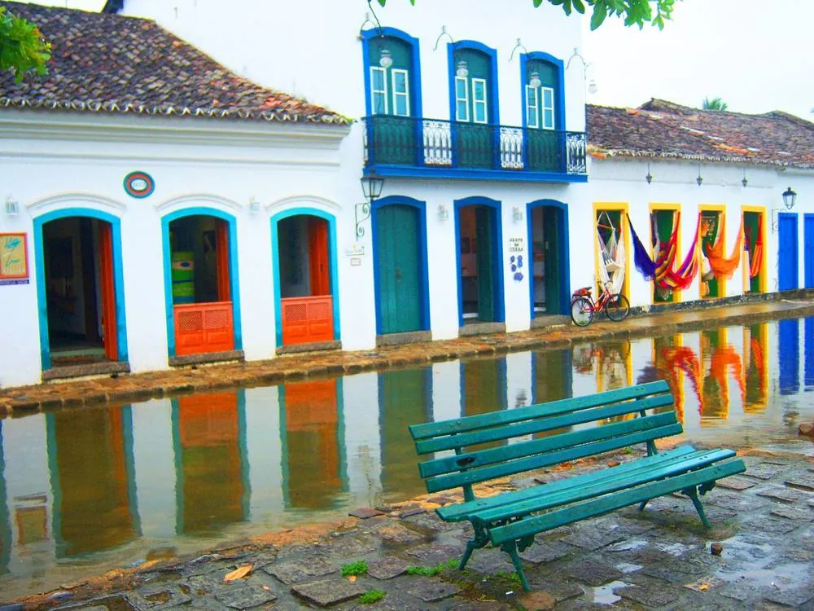
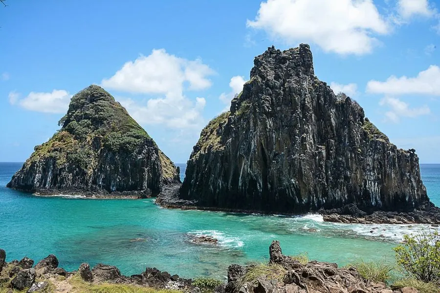

実際のページをのぞく
表紙、1日の流れ、カタカナ読みのフレーズ集、100件以上のおすすめスポット、書き込める準備シート。実物のページを約20秒でご覧ください。
ブラジルは日本の約22.5倍の広さがあります。行き先を決めるだけで、時間がかかってしまいます。

このガイドでできること
ブラジル人の友人として、あなたに語りかけるつもりで書いた日本語のガイドです。
ガイドの中身
日本とブラジルの100年以上の歴史、笠戸丸と日系社会、日本とくらべた全体地図、このガイドの使い方。
旅の備え、ビザと入国、季節と気候、日本からのフライト、カードとPix、便利なアプリ、カタカナ読み付きポルトガル語フレーズ、マナー、健康。
1日を午前・午後・夜に分けたモデルコース。アクセス、食事どころ、立ち寄り先ごとのGoogleマップのリンク付き。
海岸、ラゴス地方、クリチバ、サンタカタリーナ州、ゴイアス州、ジョアン・ペソア、ナタール、レンソイス・マラニャンセス、ミナス・ジェライス州の歴史の町、フェルナンド・デ・ノローニャ、カピトリオ（フルナス湖の峡谷）。
月ごとのお祭りカレンダー、セルタネージョとロデオ、ガウショ、オクトーバーフェスト、フェスタ・ジュニーナ、先住民の文化、日系のブラジル。
食事のしかた、地方ごとの料理、お菓子、カシャーサ、ワイン、コーヒー、日本とのつながり、食事のマナー。
観光スポット、バー、レストランを町ごとに。すべてにGoogleマップのリンク付き。
持ち物チェックリスト、日別の服装シート、書き込める旅程表、予算シート、連絡先・予約メモ。
サンパウロのグアルーリョス国際空港から入り、海岸の島々、高原の町、イグアスの滝、南部の島とドイツ系の町を巡ります。移動は飛行機、バス、送迎車、配車アプリ、船。レンタカーは使いません。



イグアスの滝は、ブラジル側とアルゼンチン側の2日間で。ゆっくりしたペースが好きな方のために、ラゴス地方を外す案など、アレンジ案も載せています。
観光スポット、バー、レストランを町ごとに紹介。それぞれにGoogleマップのリンクが付いています。
「おすすめの場所の地図」と「14日間のモデルコースの地図」。ご自分のGoogleマップアプリに保存して、旅行中に使えます。
書き込める旅程表（D1〜D14）、予算シート、持ち物チェックリスト、日別の服装シート、連絡先・予約メモ。
列車はクリチバの高原から小さな町モヘッチスまで下り、大西洋岸森林の中のトンネルや橋を通り抜けます。
アクセス
乗車はクリチバのホドフェホヴィアリア駅（Estação Rodoferroviária）。出発は通常8時30分です。
午後
モヘッチスには昼ごろに到着します。名物はバヘアード（barreado）。密封した土鍋で、少なくとも8時間煮込んだ肉料理です。
| ポルトガル語 | 読み | 意味 |
|---|---|---|
| Bom dia | ボン ジーア | おはようございます |
| Obrigado / Obrigada | オブリガード / オブリガーダ | ありがとう（男性／女性） |
| Com licença | コン リセンサ | すみません（通るとき） |
| Não falo português | ナウン ファーロ ポルトゥゲース | ポルトガル語は話せません |
種類：歴史地区／街歩き
でこぼこの石畳、色とりどりの扉の白い家、古い教会が並びます。靴底のしっかりした靴で、ゆっくり歩いてください。
Googleマップのリンク付き／確認日：2026年11月12日
| 項目 | 内訳 | 予定（円） | 実際（円） |
|---|---|---|---|
| 国際線 | 日本 ↔ サンパウロ（往復） | ||
| 国内線 | クリチバ → フォス・ド・イグアス | ||
| フェリー・船 | イーリャ・グランデへの船 |

砂漠のような白い砂丘に、雨のあと青い湖がいくつも現れる場所。

海岸から約340km、大西洋に浮かぶ島々。2001年にユネスコ世界自然遺産に登録されました。
演歌が好きな人へ。ブラジルの“心の歌”セルタネージョの都、ゴイアニア。
赤い断崖、砂丘、イルカの来る海。ブラジル北東部の、まだ知られていない海岸。
8月、サンパウロ州の内陸で開かれるロデオ祭り。お祭りカレンダーで紹介しています。
島が365あると言われる湾。1日ひとつずつ巡れば、ちょうど1年。
こんな方へ
リオデジャネイロ市やカーニバルを中心にした旅を探している方には、このガイドは向いていません。リオ市はモデルコースに入れていません。
日本とのつながり
ガイドの中では、わかりやすくなる場面で日本とのつながりを紹介しています。
1908年、笠戸丸が神戸港を出航し、781人の移民が約50日の船旅でサントス港に着きました。今、ブラジルには約270万人の日系人が暮らしています（外務省）。この物語の、ブラジル側の半分を旅で見に行けます。

急カーブ、続くトンネル、谷にかかる橋。箱根の登山電車が好きな方なら、森の中を海へ下るこの観光列車の楽しさがわかるはずです（D9）。

満ち潮になると、石畳の通りに海が入ってくる町があります。潮の満ち引きにあわせて、町全体が表情を変えます（D3）。
ブラジルとパラグアイが共同で運営する水力発電所。大きな土木工事が、展望台やガイド付き見学のある観光スポットになっています（D10）。

どちらも海に浮かぶ世界自然遺産の島。ただし、ノローニャには空港があり、レシフェから飛行機で約1時間20分です（パートD）。
日本語のPDFです。決済が終わると、すぐにダウンロードの案内がメールで届きます。
はい。PDFを開けるスマートフォン、タブレット、パソコンで読めます。モデルコースとおすすめのGoogleマップのリンクは、タップするとそのまま地図が開きます。
本文はすべて日本語です。地名や店名はカタカナとポルトガル語の両方で書いているので、現地の看板や地図でも探せます。旅先で使うポルトガル語のフレーズには、カタカナの読みを付けています。
2026年11月時点で確認した情報です。料金、営業時間、運行日などは変わることがあります。出発前に、各施設や運行会社のサイトでご確認ください。
いいえ。このガイドは旅行情報の提供だけを目的としています。宿泊、交通、ツアーの予約や手配は行っていません。
ご購入いただいた方の個人での利用に限らせていただきます。ファイルの再配布、転売、インターネットへの掲載はご遠慮ください。
はい。パートA（歴史）、D（旅先）、E（文化）、F（食べもの）は、読んでブラジルを知るためのページです。
購入日から7日以内であれば、返金を申請できます（決済事業者Cakto Commerce OÜの返金保証によります）。ご希望の場合は、下記のメールアドレスか、購入確認メールに記載の窓口までご連絡ください。ファイルが開けないなどの不具合は、交換でも対応します。詳しくは特定商取引法に基づく表記をご覧ください。
クレジットカードほか、決済画面に表示される方法でお支払いいただけます。価格は米ドル建て（US$9.90）で、決済画面では円で表示されます。2026年11月13日時点の表示は、商品代金 約1,636円＋決済サービス手数料 約163円＝合計 約1,799円です（為替レートにより変わります）。カード会社によっては、別に海外利用の手数料がかかる場合があります。
全11地域に掲載
全11地域に「行くべき場所」と「食べる場所」を掲載。現地で迷わない、ガイドブックにないリスト。
掲載情報はTripAdvisorの2026年11月13日時点の評価をもとにしています。営業状況は現地でご確認ください。